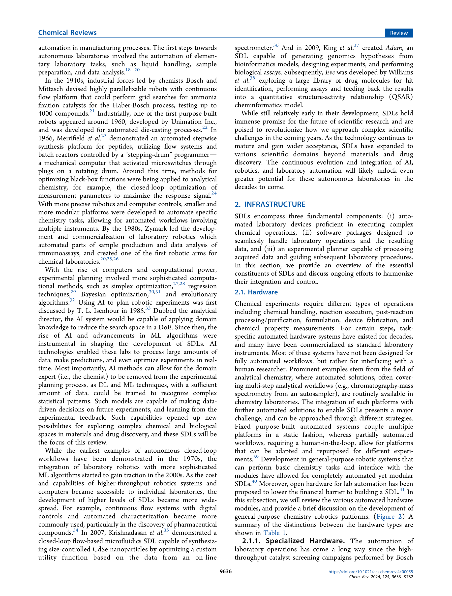
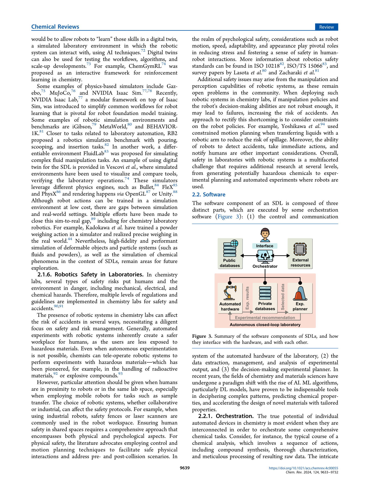
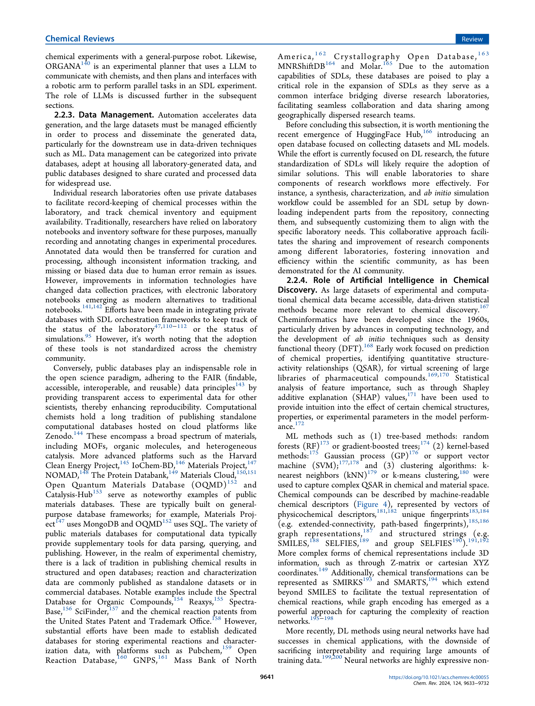
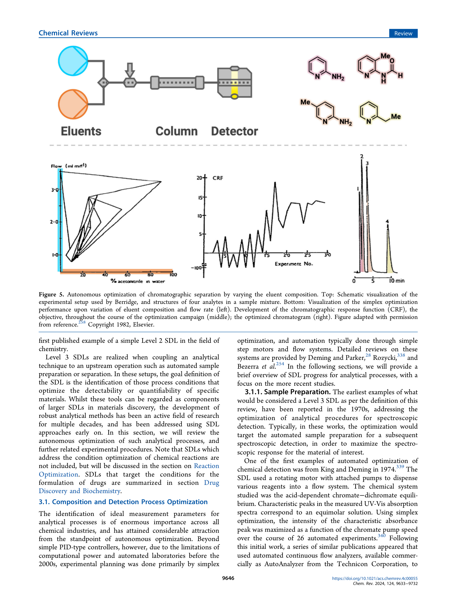

Figure 1
Figure 1
자율주행 실험실(Self-Driving Laboratories, SDLs)의 화학 및 재료과학 분야 적용에 대한 포괄적 리뷰 논문이다. SDL의 하드웨어(로봇, 센서, 액체 처리 장치), 소프트웨어(오케스트레이션, 데이터 관리, AI 기반 실험 계획), 그리고 분석 공정 최적화, 반응 최적화, 약물 발견, 구조 재료, 광전자소자, 에너지 저장 재료 등 다양한 과학 영역에서의 실제 SDL 구현 사례를 100페이지에 걸쳐 체계적으로 정리하였다. SDL의 자동화 수준을 Level 0~5로 분류하는 계층적 프레임워크를 제시하여, 각 시스템의 자율성 정도를 명확히 구분한다.

Figure 2
기후변화, 에너지 지속가능성, 의료 위기 등 긴급한 글로벌 과제에 대응하기 위해 재료 및 화학 발견의 가속화가 필수적이다. 전통적 실험 방식은 점진적 진행, 재현성 문제, 부정적 결과의 미보고 등의 한계를 가진다. 실험 자동화와 데이터 기반 의사결정을 결합한 "폐쇄 루프(closed-loop)" 실험 시스템이 이러한 병목을 해소할 수 있으나, SDL 기술의 현재 상태와 응용 영역에 대한 종합적 조망이 부족하였다.

Figure 3

Figure 4

Figure 5
화학 및 재료과학에서의 자율주행 실험실(SDL)에 관한 현존 가장 포괄적인 리뷰 논문이다. 100페이지, 700+개 참고문헌이라는 방대한 분량에도 불구하고, 하드웨어-소프트웨어-응용 분야로 이어지는 체계적 구조 덕분에 읽기에 명확하다. 특히 자율성 수준 분류 체계(Level 0~5)는 이 분야의 공통 언어로 기능할 수 있으며, 각 응용 분야별 실제 SDL 사례의 상세한 기술은 신규 연구자의 진입 장벽을 크게 낮춘다. 다만 100페이지 리뷰의 본질적 한계로, 개별 시스템에 대한 심층 비판적 분석보다는 서술적 정리에 가까우며, SDL 간 정량적 성능 비교가 부족하다. Aspuru-Guzik 그룹의 독보적 위치에서 작성된 만큼 자체 연구에 대한 편향 가능성도 고려해야 한다. 그럼에도 불구하고, AI for Science 연구자가 실험 자동화의 현재 지형을 파악하기 위한 필수 참고 문헌이다.